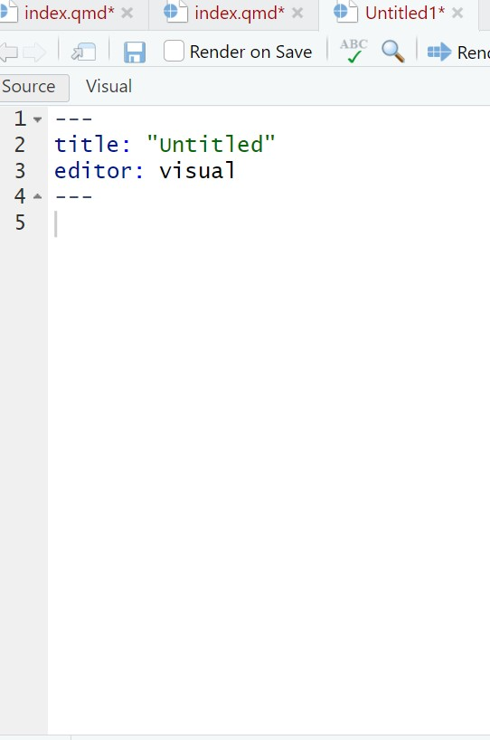
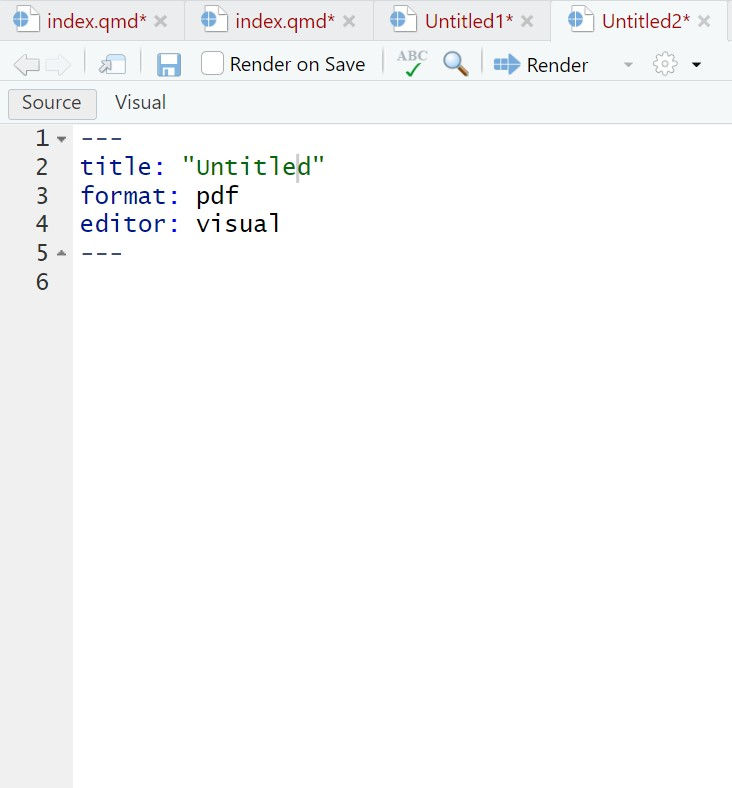
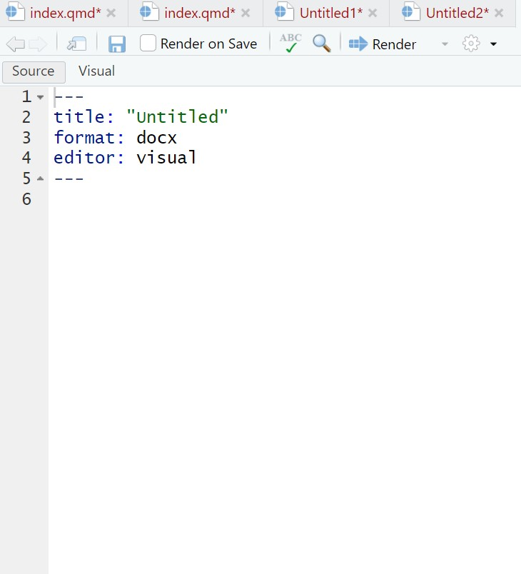

Quarto를 이용해 R 코드와 분석 결과가 포함된 문서를 작성하는 방법을 강의할 예정입니다. 강의 내용을 미리 공유합니다.
시작하기 전에
Quarto는 Markdown을 기반으로 한 문서 작성 도구로, Python, R , Julia, and Observable 등 다양한 언어로 코드실행, 분석, 시각화를 포함한 컨텐츠를 만드는 툴이며 크게 3가지 활용법이 있다.
문서(
pdf,html,docx): 글쓰기, 분석 결과, 참고문헌 등 논문의 모든 작업을 Quarto으로 수행한다.프리젠테이션(
pdf,html,pptx): R 코드나 분석결과가 포함된 프리젠테이션을 만든다. 기본 템플릿2 외에 xaringan3 패키지가 최근 인기를 끌고 있다.웹(
html): 웹사이트나 블로그를 만든다. blogdown4 이나 distill5 패키지가 대표적이다. 이 글의 블로그도 distill로 만들었으며, 과거 차라투 홈페이지는 blogdown을 이용하였다.
본 강의는 1의 가장 기초에 해당하는 강의로 간단한 문서를 작성하는 것을 목표로 한다. pdf 문서를 만들기 위해서는 추가로 LaTeX 문서작성 프로그램인 Tex Live를 설치해야 하며 본 강의에서는 생략한다.
.qmd 문서 시작하기
Quarto는 qmd 파일로 작성되며 Quarto6 패키지를 설치한 후, Rstudio에서 File \(\rightarrow\) New File \(\rightarrow\) Quarto Document… 의 순서로 클릭하여 시작할 수 있다.
 Rstudio File 메뉴7
Rstudio File 메뉴7
 Quarto 시작 메뉴8
Quarto 시작 메뉴8
문서의 제목과 저자 이름을 적은 후 파일 형태를 아무거나 고르면(나중에도 쉽게 수정 가능)확장자가 qmd인 문서가 생성될 것이다.
다음은 각각 html, pdf, docx로 생성된 문서이다.


생각보다 간단하지 않은가? 이제 본격적으로 qmd 파일의 내용을 살펴보면서 어떻게 글과 코드를 작성하는지 알아보자. qmd는 크게 제목을 적는 YAML Header, 글을 쓰는 Markdown Text와 코드를 적는 Code Chunk로 나눌 수 있다.

YAML Header
YAML은 YAML Ain’t Markup Language의 재귀형식의 이름을 갖고 있는 언어로 가독성에 초점을 두고 개발되었다. Quarto은 qmd의 시작 부분에 문서 형식을 설정하는 용도로 이 포맷을 이용한다. 다음은 기초 정보만 포함된 YAML이다.
---
title: "My Document"
format:
html:
toc: true
number-sections: true
css: styles.css
---YAML 에 기본적으로 title, author, date 등을 작성할 수 있고, format을 통해 출력 형식 (e.g html, pdf, docx…) 과 각 형식에 맞는 다양한 옵션을 설정하여 문서를 꾸밀 수 있다. Table of Contents, Layout, Fonts 등 다양한 옵션의 설정이 가능하고, 여기서는 Toc 옵션에 대해 살펴볼 것이다. 자세한 format option은 Quarto reference를 참고하기 바란다.
toc
Quarto 문서(.qmd)에서 ##을 사용해 제목을 작성하면, 자동으로 목차(TOC)에 포함된다. 하위 목차를 추가하려면 ###, ####처럼 #의 개수를 늘려 계층 구조를 만들 수 있다.
toc 옵션에는 toc-depth, toc-location, toc-title, toc-expand 가 있다. 이 문서의 yaml 부분의 toc 옵션을 살펴보면 다음과 같이 설정되어있다.
---
title: "quarto 의 기초"
author: .
editor: visual
format:
html:
toc-depth: 3
toc-expand: true
toc-location: left
toc-title: "Quarto 알아보기"
---Markdown 글쓰기
Markdown 은 이름에서 알 수 있듯이 마크다운(Markdown) 을 기반으로 만들어졌다. 마크다운은 문법이 매우 간단한 것이 특징으로 깃허브의 README.md가 대표적인 마크다운 문서이다. Quarto 는 Pandoc markdown 을 바탕으로 하며, quarto guide9에 흔히 쓰는 문법이 정리되어 있다.
2 가지만 따로 살펴보겠다.
Inline R code
문장 안에 분석 결과값을 적을 때, 분석이 바뀔 때마다 바뀐 숫자를 직접 수정해야 한다. 그러나 숫자 대신 `r <코드>` 꼴로 R 코드를 넣는다면 재분석시 그 숫자를 자동으로 업데이트 시킬 수 있다.
There were `r nrow(cars)` cars studiedThere were 50 cars studied
수식
LaTeX 문법을 사용하며 hwp 문서의 수식 편집과 비슷하다. inline 삽입은 $...$, 새로운 줄은 $$...$$ 안에 식을 적으면 된다.
This summation expression $\sum_{i=1}^n X_i$ appears inline.This summation expression \(\sum_{i=1}^n X_i\) appears inline.
$$
\sigma = \sqrt{ \frac{1}{N} \sum_{i=1}^N (x_i -\mu)^2}
$$\[\sigma = \sqrt{ \frac{1}{N} \sum_{i=1}^N (x_i -\mu)^2}\]
수식 전반은 LaTeX math and equations10을 참고하기 바란다.
R chunk
Quarto 에서는 내장된 knitr 패키지을 이용하여 R에서 작성한 코드를 실행하고 그 결과를 실시간으로 출력하여 문서에 삽입할 수 있다.
R chunk 생성하기
R chunk 를 생성하는 방법은 위의 단추를 통해 생성하거나 
혹은 다음과 같이 직접 타이핑하여 생성도 가능하다. 
R chunk 옵션
.qmd 문서에서 R 코드가 들어가는 방식은 4가지이다.
몰래 실행. 코드와 결과는 다 숨긴다
실행. 코드와 결과를 모두 보여준다. - default
실행. 코드는 숨기고 결과만 보여준다.
실행하지 않음. 코드 보여주기만 한다.
include, echo, eval 3가지 옵션으로 지정한다. - eval=F : 코드를 실행하지 않는다. - echo=F : 코드를 보여주지 않는다. - include=F : 실행 결과를 보여주지 않는다.
코드 청크의 옵션은 YAML 에서 지정하여 문서 전체에 적용되게 할 수 있고, 각각 R 청크마다 #| 을 쳐서 각각 옵션을 변경할 수도 있다.
최초 설정
문서를 처음 생성 시 옵션을 따로 지정하지 않으면 다음의 값으로 실행된다.
include = TRUE
echo = TRUE
eval = TRUE 코드를 실행하고, 코드와 결과물 모두 문서에 보여준다.
print("Hello world")[1] "Hello world"이를 잘 활용하여 R내에서 문서를 완성할 수 있다.
생존곡선을 그릴 때를 생각해보자, 생존 곡선을 그릴 때는 먼저 survfit 함수를 통해 생존확률을 구해야 한다.
이 때 survfit 함수는 결과를 보이지 않아도 되므로
실행하고 결과를 보이지 않기
다음은 이 html을 생성할 때 쓴 quarto 문서의 캡처본으로 
현재 강의 화면인 html 에는 코드 및 결과를 보이지 않는다.
실행하고 결과를 보여주기
그러나 실행은 되었기 때문에 다음의 코드에서 fit3 에 대한 ggsurvplot 함수를 적용할 수 있었고 코드 및 실행 후 결과는 다음과 같다.
ggsurv <- ggsurvplot(fit3, data = colon,
fun = "cumhaz", conf.int = F,
risk.table = F, risk.table.col="strata",
ggtheme = theme_bw())
ggsurv
이렇게 시행하여 echo = False 옵션까지 적용하면 quarto 내에서 분석을 시행하고 그에 대한 문서작성을 한번에 할 수 있다.
이외에도 코드 청크에 다음과 같은 옵션을 적용 가능하다.
-
message=F- 실행 때 나오는 메세지를 보여주지 않는다. -
warning=F- 실행 때 나오는 경고를 보여주지 않는다. -
error=T- 에러가 있어도 실행하고 에러코드를 보여준다. -
fig.height = 7- 그림 높이, R로 그린 그림에만 해당한다. -
fig.width = 7- 그림 너비, R로 그린 그림에만 해당한다. -
fig.align = 'center'- 그림 위치, R로 그린 그림에만 해당한다.
r chunk 에 적용할 수 있는 전체 옵션은 knitr::opts_chunk$get 함수로 확인할 수 있다. `
knitr::opts_chunk$get()$eval
[1] TRUE
$echo
[1] TRUE
$results
[1] "markup"
$tidy
[1] FALSE
$tidy.opts
NULL
$collapse
[1] FALSE
$prompt
[1] FALSE
$comment
[1] NA
$highlight
[1] TRUE
$size
[1] "normalsize"
$background
[1] "#F7F7F7"
$strip.white
[1] TRUE
$cache
[1] FALSE
$cache.path
[1] "index_cache/html/"
$cache.vars
NULL
$cache.lazy
[1] TRUE
$dependson
NULL
$autodep
[1] FALSE
$cache.rebuild
[1] FALSE
$fig.keep
[1] "high"
$fig.show
[1] "asis"
$fig.align
[1] "default"
$fig.path
[1] "index_files/figure-html/"
$dev
[1] "png"
$dev.args
NULL
$dpi
[1] 96
$fig.ext
NULL
$fig.width
[1] 7
$fig.height
[1] 5
$fig.env
[1] "figure"
$fig.cap
NULL
$fig.scap
NULL
$fig.lp
[1] "fig:"
$fig.subcap
NULL
$fig.pos
[1] ""
$out.width
NULL
$out.height
NULL
$out.extra
NULL
$fig.retina
[1] 2
$external
[1] TRUE
$sanitize
[1] FALSE
$interval
[1] 1
$aniopts
[1] "controls,loop"
$warning
[1] FALSE
$error
[1] FALSE
$message
[1] FALSE
$render
NULL
$ref.label
NULL
$child
NULL
$engine
[1] "R"
$split
[1] FALSE
$include
[1] TRUE
$purl
[1] TRUE
$fig.asp
NULL
$fenced.echo
[1] FALSE
$ft.shadow
[1] FALSE다음은 필자가 논문을 quarto로 쓸 때 흔히 쓰는 디폴트 옵션이다. 
Figures
.qmd 문서에 그림이 들어가는 방법은 2가지가 있다.
R 코드로 생성 :
plot함수,ggplot2패키지 등외부 그림 삽입
앞서도 언급했듯이 주의할 점은 그림이 만들어지는 방법에 따라 서로 다른 옵션이 적용된다는 것이다. 일단 전자부터 살펴보자.
Figures with R
R 코드에서 자체적으로 만든 그림은 전부 chunk 옵션의 지배를 받아 간단하다.
#|fig-cap: "scatterplot: cars"
#|fig-width: 8
#|fig-height: 6
plot(cars, pch = 18)
External figures
외부 그림은 R 코드로도 삽입할 수 있고 마크다운 문법을 쓸 수도 있는데, 어떤 방법을 쓰느냐에 따라 다른 옵션을 적용받는다는 것을 주의해야 한다. R에서는 knitr::include_graphics 함수를 이용하여 그림을 넣을 수 있고 이 때는 chunk 내부의 옵션이 적용된다.
library(knitr)
include_graphics("https://www.tidyverse.org/images/tidyverse-default.png")
같은 그림을 chunk없이 바로 마크다운에서 삽입할 수도 있다. 이 때는 YAML의 옵션이 적용된다.
{ width=50% }
{ width=50% } 는 그림의 크기를 조절하는 옵션이며 R chunk에서도 같은 옵션 out.width="50%"이 있다. 위치를 가운데로 조절하려면 <center>...</center> 를 포함시키자.
<center>
{ width=50% }
</center>
개인적으로는 외부 이미지도 chunk 내부에서 읽는 것을 추천한다. chunk 내부의 옵션들이 마크다운의 그것보다 훨씬 체계적이고 쉬운 느낌이다.
Tables
논문을 쓸 때 가장 귀찮은 부분 중 하나가 분석 결과를 테이블로 만드는 것으로, knitr::kable() 함수를 쓰면 문서 형태에 상관없이 Rmd에서 바로 테이블을 만들 수 있다. 아래는 데이터를 살펴보는 가장 간단한 예시이다.
#|label: "tables-mtcars"
knitr::kable(iris[1:5, ], caption = 'A caption', row.names = T)| Sepal.Length | Sepal.Width | Petal.Length | Petal.Width | Species | |
|---|---|---|---|---|---|
| 1 | 5.1 | 3.5 | 1.4 | 0.2 | setosa |
| 2 | 4.9 | 3.0 | 1.4 | 0.2 | setosa |
| 3 | 4.7 | 3.2 | 1.3 | 0.2 | setosa |
| 4 | 4.6 | 3.1 | 1.5 | 0.2 | setosa |
| 5 | 5.0 | 3.6 | 1.4 | 0.2 | setosa |
epiDisplay 패키지의 regress.display, logistic.display 함수를 활용하면 회귀분석의 결과를 바로 테이블로 나타낼 수 있다.
#|label: "regtable"
mtcars$vs <- as.factor(mtcars$vs)
mtcars$cyl <- as.factor(mtcars$cyl)
model <- glm(mpg ~ disp + vs + cyl, data = mtcars)
model.display <- epiDisplay::regress.display(model, crude = T, crude.p.value = T)
model.table <- model.display$table[rownames(model.display$table)!="", ]
kable(model.table, caption = model.display$first.line)| crude coeff.(95%CI) | crude P value | adj. coeff.(95%CI) | P(t-test) | P(F-test) | |
|---|---|---|---|---|---|
| disp (cont. var.) | -0.04 (-0.05,-0.03) | < 0.001 | -0.03 (-0.05,0) | 0.019 | < 0.001 |
| vs: 1 vs 0 | 7.94 (4.6,11.28) | < 0.001 | 0.04 (-3.81,3.89) | 0.984 | 0.334 |
| cyl: ref.=4 | 0.041 | ||||
| 6 | -6.92 (-10.11,-3.73) | < 0.001 | -4.77 (-8.56,-0.98) | 0.016 | |
| 8 | -11.56 (-14.22,-8.91) | < 0.001 | -4.75 (-12.19,2.7) | 0.202 |
테이블을 좀 더 다듬으려면 kableExtra 패키지가 필요하며, 자세한 내용은 cran 설명서11를 참고하기 바란다. html 문서의 경우 kable()외에도 다양한 함수들을 이용할 수 있는데, 대표적인 것이 rmarkdown::paged_table() 함수와 DT 패키지이다. 전자는 아래와 같이 YAML에서 테이블 보기의 기본 옵션으로 설정할 수도 있다.
---
title: "Motor Trend Car Road Tests"
output:
html_document:
df_print: paged
---DT 패키지에 대한 설명은 Rstudio DT 홈페이지12를 참고하기 바란다.
마치며
본 강의를 통해 Quarto으로 기본적인 문서를 만드는 법을 알아보았다. 본 강의에서는 시간 관계상 참고문헌 다는 법을 언급하지 않았는데 궁금하다면 Bibliographies and Citations13을 참고하자.
이 내용까지 숙지한다면 Quarto으로 논문을 쓸 준비가 된 것이다. Quarto에 대한 전반적인 내용은 아래의 Quarto Cheet Sheet14에 잘 요약되어 있으니 그때그떄 확인하면 좋다.
Footnotes
https://bioinformatics.ccr.cancer.gov/docs/btep-coding-club/CC2024/Quarto/GettingStarted_with_Quarto_orig.html↩︎
https://rmarkdown.rstudio.com/lesson-11.html↩︎
https://github.com/yihui/xaringan↩︎
https://github.com/rstudio/blogdown↩︎
https://rstudio.github.io/distill/↩︎
https://github.com/quarto-dev/quarto-r↩︎
https://github.com/rstudio/rstudio/issues/10966↩︎
https://github.com/quarto-dev/quarto-r↩︎
https://quarto.org/docs/authoring/markdown-basics.html↩︎
https://www.latex-tutorial.com/tutorials/amsmath/↩︎
https://cran.r-project.org/web/packages/kableExtra/vignettes/awesome_table_in_html.html↩︎
https://rstudio.github.io/DT/↩︎
https://pandoc.org/MANUAL.html#citations↩︎
https://rstudio.github.io/cheatsheets/quarto.pdf↩︎
Citation
BibTeX citation:
@online{yoon2025,
author = {Yoon, YuJeong},
title = {Quarto {의} {기초}},
date = {2025-03-13},
url = {https://blog.zarathu.com/en/posts/2025-03-13-Quarto/},
langid = {en}
}
For attribution, please cite this work as:
Yoon, YuJeong. 2025. “Quarto 의 기초.” March 13, 2025. https://blog.zarathu.com/en/posts/2025-03-13-Quarto/.